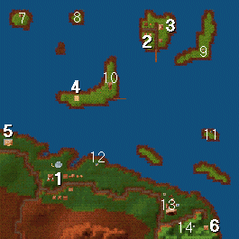

| 1 | Bootleg Bay [City Map] |
| 2 | North Town [City Map] |
| 3 | Temple of the Tsantsa |
| 4 | Temple of the Sun [Map] |
| 5 | Temple of the Fist [Map] |
| 6 | Hall of the Fire Lord [Map] |
| 7 | Shrine of Might [Shrine List] pray here in January |
| 8 | Pedestal |
| 9 | Fountain [+2 permanent intelligent, if under 15] |
| 10 | Temple of Baa (healing, donation) |
| 11 | Fountain [+2 permanent personality, if under 15] |
| 12 | Fountain of Magic [+20 SP restoration] |
| 13 | Circus location in December |
| 14 | Obelisk #11 |
Leave us a message at: mgrounds@hotmail.com